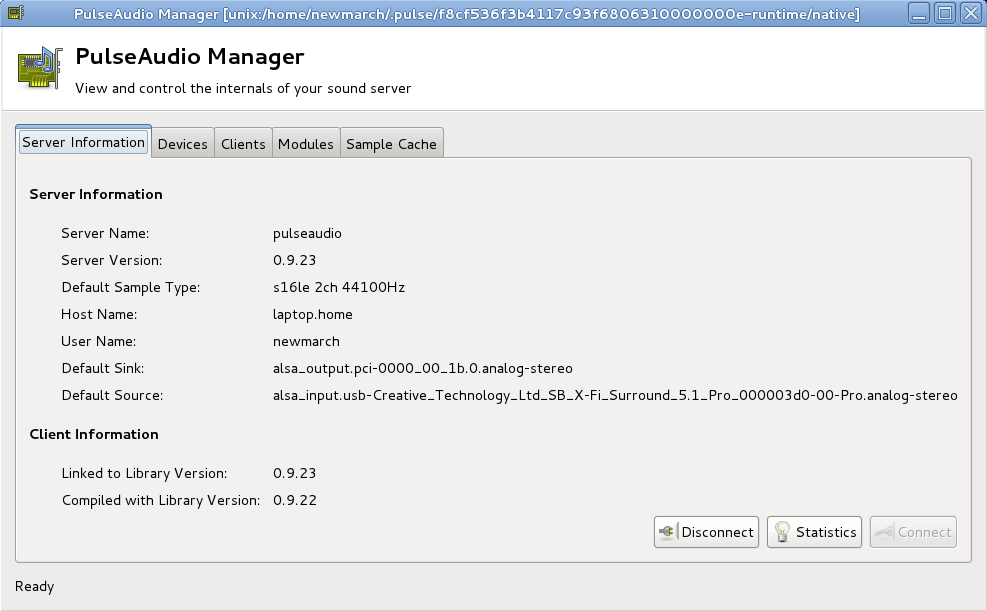
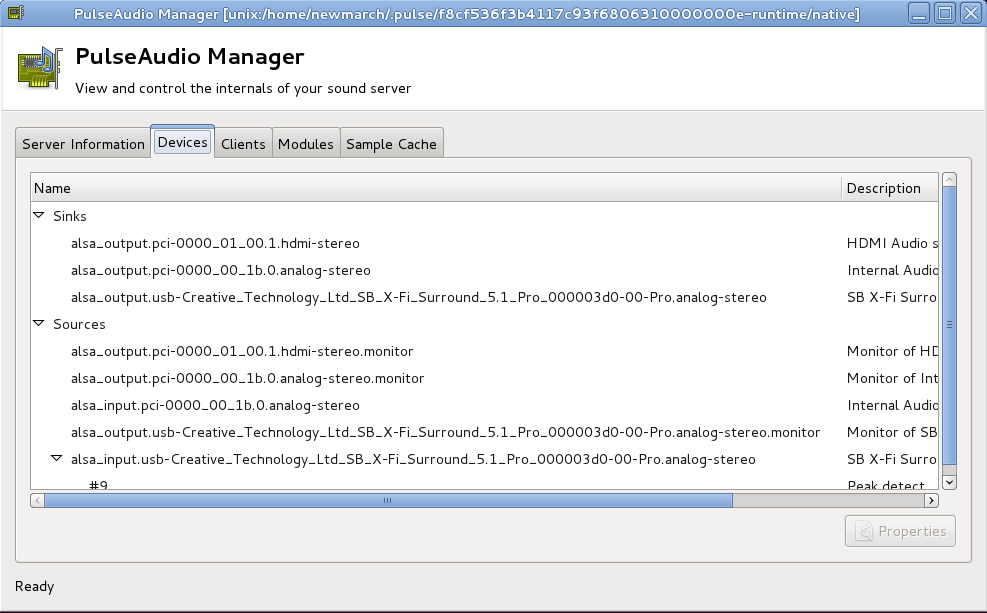
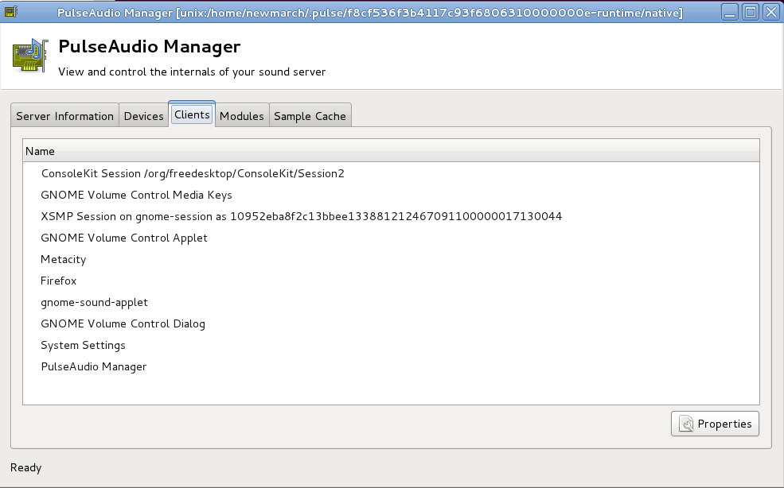
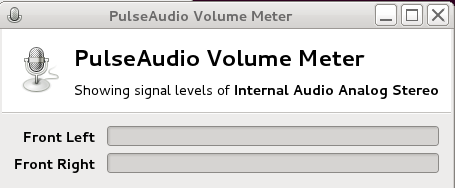
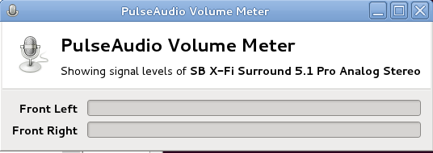
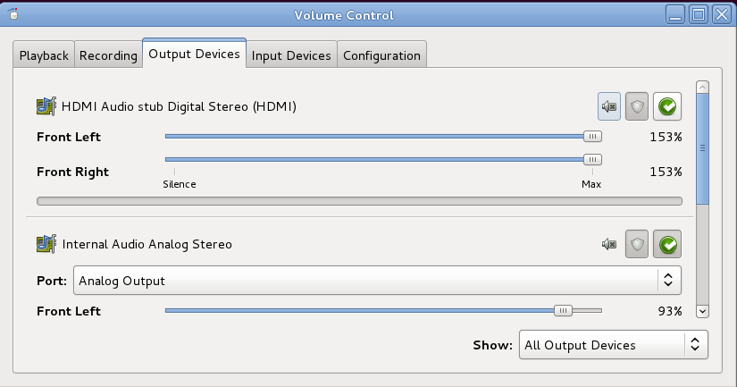
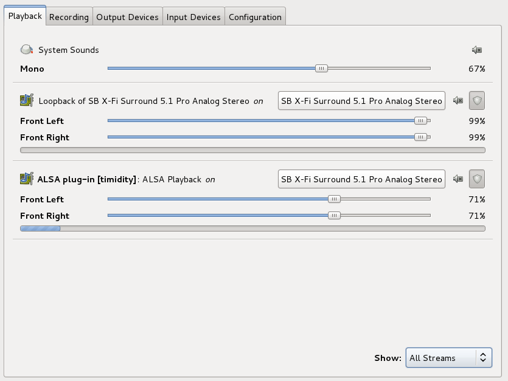
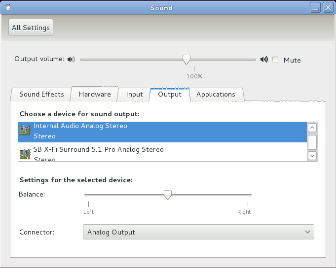

PulseAudio is a sound server, sitting above device drivers such as ALSA or OSS. It offers more capablilities than device drivers. PulseAudio is designed for consumer audio, to make it easy to use sound on desktops, laptops and mobile devices. Multiple sources of sound can all play to the PulseAudio server and it will mix them together and play them. Low latency is not a design goal, so it is unsuitable for professional audio.
If you have a current Linux system, PulseAudio is probably running. Test by running this from the command line:
ps agx | grep pulse
If you see a line like "/usr/bin/pulseaudio --start --log-target=syslog" then it is running already.
If it isn't running and you have it installed, then start it by
pulseaudio --start
Stopping PulseAudio isn't so easy - Carla Schroder shows how . The basic problem is that PulseAudio is set to respawn itself after it is killed. You have to turn that off by editing /etc/pulse/client.conf, changing autospawn = yes to autospawn = no, and setting daemon-binary to /bin/true. Then you can kill the processs, remove it from startup files, etc.
If you want to run another sound system (such as Jack) for a short
while, you may just want to pause PulseAudio. You do this by using
pasuspender. This takes a command (after "--") and
will pause access by the PulseAudio server to the audio devices until
the subcommand has finished.
For example,
pasuspender -- jackd
will run the Jack server, with PulseAudio getting out of the way until it has finished.
This shows you information about the PulseAudio server, its devices and clients.
The following three screen dumps show the type of information it gives.



pavumeter is a simple meter for showing input or output levels
of the default devices. When run by pavumeter it shows the
playback device as in

while if it is run by pavumeter --record it shows the record device
as in

pavucontrol allows you to control the input and ouput volumes of the
different connected audio devices:

With these tabs, pavucontrol is a device-level mixer,
able to control the overall volume to individual devices.
One of the special advantages of PulseAudio is that it can perform
application-level mixing. If two audio sources write to the same
PulseAudio device, the audio will be mixed to the output device.
pavucontrol can show the multiple applications using
the Playback tab, showing all applications or all streams
currently being mixed. Each stream can have its channel volumes
individually controlled.
For example, Karaoke on the cheap can be done by setting the straight-through module for the microphone to speaker by
pactl load-module module-loopback latency_msec=1
while the Karoake file is played by a Karaoke player
such as kmid through timidity e.g.
kmid nightsin.kar
While these two are running, relative volumes can be controlled
by use of pavucontrol:

The gnome-control-center sound allows full view and control of
the attached sound devices, including selection of the default input and
output devices. It looks like

These are command line tools to record and playback sound files. They are all symbolic links to the same code, just differently named links. The default format is PCM s16. There are many options, but they don't always do quite what you want them to. For example, to play from the default record device to the default playback device with minimum latency,
pacat -r --latency-msec=1 | pacat -p --latency-msec=1
This actually has a latency of about 50 msec.
These two commands do basically the same thing. pacmd is
the interactive version with more options.
For example pacmd with the command
list-sinks includes
name: <alsa_output.pci-0000_00_1b.0.analog-stereo>
driver: <module-alsa-card.c>
flags: HARDWARE HW_MUTE_CTRL HW_VOLUME_CTRL DECIBEL_VOLUME LATENCY FLAT_VOLUME DYNAMIC_LATENCY
state: SUSPENDED
suspend cause: IDLE
priority: 9959
volume: 0: 93% 1: 93%
0: -1.88 dB 1: -1.88 dB
balance 0.00
base volume: 100%
0.00 dB
volume steps: 65537
muted: no
current latency: 0.00 ms
max request: 0 KiB
max rewind: 0 KiB
monitor source: 1
sample spec: s16le 2ch 44100Hz
channel map: front-left,front-right
Stereo
used by: 0
linked by: 0
configured latency: 0.00 ms; range is 16.00 .. 2000.00 ms
card: 1 <alsa_card.pci-0000_00_1b.0>
module: 5
properties:
alsa.resolution_bits = "16"
device.api = "alsa"
device.class = "sound"
alsa.class = "generic"
alsa.subclass = "generic-mix"
alsa.name = "STAC92xx Analog"
alsa.id = "STAC92xx Analog"
alsa.subdevice = "0"
alsa.subdevice_name = "subdevice #0"
alsa.device = "0"
alsa.card = "0"
alsa.card_name = "HDA Intel PCH"
alsa.long_card_name = "HDA Intel PCH at 0xe6e60000 irq 47"
alsa.driver_name = "snd_hda_intel"
device.bus_path = "pci-0000:00:1b.0"
sysfs.path = "/devices/pci0000:00/0000:00:1b.0/sound/card0"
device.bus = "pci"
device.vendor.id = "8086"
device.vendor.name = "Intel Corporation"
device.product.id = "1c20"
device.product.name = "6 Series/C200 Series Chipset Family High Definition Audio Controller"
device.form_factor = "internal"
device.string = "front:0"
device.buffering.buffer_size = "352800"
device.buffering.fragment_size = "176400"
device.access_mode = "mmap+timer"
device.profile.name = "analog-stereo"
device.profile.description = "Analog Stereo"
device.description = "Internal Audio Analog Stereo"
alsa.mixer_name = "IDT 92HD90BXX"
alsa.components = "HDA:111d76e7,10280494,00100102"
module-udev-detect.discovered = "1"
device.icon_name = "audio-card-pci"
ports:
analog-output: Analog Output (priority 9900)
analog-output-headphones: Analog Headphones (priority 9000)
active port: <analog-output>
PulseAudio uses its own naming conventions. The names of source devices (such as microphones) can be found using code from the PulseAudio FAQ :
pactl list | grep -A2 'Source #' | grep 'Name: .*\.monitor$' | cut -d" " -f2
On my system this produces
alsa_output.pci-0000_01_00.1.hdmi-stereo.monitor
alsa_output.pci-0000_00_1b.0.analog-stereo.monitor
alsa_input.pci-0000_00_1b.0.analog-stereo
Similarly the output devices are found by
pactl list | grep -A2 'Sink #' | grep 'Name: .*\.monitor$' | cut -d" " -f2
to give
alsa_output.pci-0000_01_00.1.hdmi-stereo
alsa_output.pci-0000_00_1b.0.analog-stereo
Using pactl you can load the module module-loopback by
pactl load-module module-loopback latency_msec=1
When loaded, sound is internally routed from the input device to the output device. The latency is effectively zero.
If you load this module into, say. your laptop, be careful about unplugging speakers, microphones, etc. The internal speaker and microphone are close enough to set up a feedback loop. Unload module number N by
pactl unload-module N
(if you have forgotten the module number, just running pactl
will list all modules so you can identify the loopback module.).
Output from pacmd shows PulseAudio uses ALSA.
The relationship is deeper: the default ALSA device is "hw:0"
but PulseAudio overrides that. In /etc/asound.conf
is a hook to load /etc/alsa/pulse-default.conf
and this contains
pcm.!default {
type pulse
hint {
description "Default"
}
}
which replaces the default device with a PulseAudio module.
Opening the default ALSA device will actually call into PulseAudio which will then call back into ALSA with the devices it chooses.
The source for Pulse Audio and its documentation is PulseAudio 2.0 There are two ways of programming with PulseAudio: the "simple API" and the "asynchronous API". Both are described below.
Pulse has a "simple" API and a far more complex asynchronous API. The simple API may be good enough for your needs.
The simple API has a small set of functions
pa_simple * pa_simple_new (const char *server, const char *name, pa_stream_direction_t dir, const char *dev, const char *stream_name, const pa_sample_spec *ss, const pa_channel_map *map, const pa_buffer_attr *attr, int *error)
Create a new connection to the server.
void pa_simple_free (pa_simple *s)
Close and free the connection to the server.
int pa_simple_write (pa_simple *s, const void *data, size_t bytes, int *error)
Write some data to the server.
int pa_simple_drain (pa_simple *s, int *error)
Wait until all data already written is played by the daemon.
int pa_simple_read (pa_simple *s, void *data, size_t bytes, int *error)
Read some data from the server.
pa_usec_t pa_simple_get_latency (pa_simple *s, int *error)
Return the playback latency.
int pa_simple_flush (pa_simple *s, int *error)
Flush the playback buffer.
A program to play from a file to the default output device is from the PulseAudio site. The basic structure is
The program is
pacat-simple.c
.
Rather weirdly, it does a dup2 to map the open file descriptor
onto stdin and then reads from stdin. This isn't
necessary - what not just read from the original file descriptor?
A program to record to a file from the default input device is from the Pulse Audio site parec-simple.c The basic structure is
Note that you need to tell PulseAudio the format to write the data, using a pa_sample_spec. Two channel, 44100hz and PCM 16 bit little-endian is chosen.
The output from this is a PCM s16 file. You can convert it to another format using Sox (e.g. sox -c 2 -r 44100 tmp.s16 tmp.wav), or import it as raw data into Audacity and play it directly.
How good are these for real-time audio? The first program can show the latency (turn the "#if 0" to "#if 1"). This code can also be copied into the second one. The results are not good:
You can combine the two programs to copy from the microphone to the speaker using a record and a playback stream. The program is pa-mic-2-speaker-simple.c :
Try running this and you will discover that the the latency is noticeable and unsatisfactory.
The simple API is ... simple. By contrast, the asynchronous API is large and complex. There are also very few examples of using this API.
Nearly all interaction with this API is asynchronous. A call is made to the PulseAudio server and when the response is ready, a library invokes a callback function that you will have passed to it when making the library call. This avoids the need for user code to either block or make polling calls.
The essential structure is
Steps (1) - (7) will be common to most applications.
The context state callback wil be called in response to changes
in the server. These are state changes such as
PA_CONTEXT_CONNECTIN, PA_CONTEXT_SETTING_NAME
and so on. The change of relevance to most applications will be
PA_CONTEXT_READY. This signifies that the application
can make requests of the server in its steady state.
In step (8) the application will set its own behaviour. This is done by setting up further callback functions for various operations, such as listing devices or playing audio.
The function pa_context_get_sink_info_list
will set up a callback function to list source devices by
pa_context_get_sink_info_list(c, sinklist_cb, NULL)
where c is the context,
sinklist_cb is the application's callback
and NULL is user data passed to the callback.
The callback is called as
void sinklist_cb(pa_context *c, const pa_sink_info *i, int eol, void *userdata)
The parameter eol can take three values: negative means a failure
of some kind; zero means a valid entry for
pa_sink_info; positive means that there are no more
valid entries in the list.
The structure pa_sink_info is defined as
struct {
const char * name;
uint32_t index;
const char * description;
pa_sample_spec sample_spec;
pa_channel_map channel_map;
uint32_t owner_module;
pa_cvolume volume;
int mute;
uint32_t monitor_source;
const char * monitor_source_name;
pa_usec_t latency;
const char * driver;
pa_sink_flags_t flags;
pa_proplist * proplist;
pa_usec_t configured_latency;
pa_volume_t base_volume;
pa_sink_state_t state;
uint32_t n_volume_steps;
uint32_t card;
uint32_t n_ports;
pa_sink_port_info ** ports;
pa_sink_port_info * active_port;
uint8_t n_formats;
pa_format_info ** formats;
} pa_sink_info
Further information about this structure is maintained in the Doxygen entry pa_sink_info Struct Reference
For information, the major fields are the name and the
description. The index is an opaque index into
some data structure and is used in many PulseAudio functions.
The proplist
is a map of general information that may contain interesting information.
This can be retrieved by iterating through the map.
There is a similar callback and data structures for input devices.
A program to list input and output devices current when the application connects to the server is palist_devices.c:
On my laptop this gives (elided)
Source: name alsa_output.pci-0000_01_00.1.hdmi-stereo.monitor, description Monitor of HDMI Audio stub Digital Stereo (HDMI)
Properties are:
key: device.description, value: Monitor of HDMI Audio stub Digital Stereo (HDMI)
key: device.class, value: monitor
key: alsa.card, value: 1
key: alsa.card_name, value: HDA NVidia
key: alsa.long_card_name, value: HDA NVidia at 0xe5080000 irq 17
key: alsa.driver_name, value: snd_hda_intel
key: device.bus_path, value: pci-0000:01:00.1
key: sysfs.path, value: /devices/pci0000:00/0000:00:01.0/0000:01:00.1/sound/card1
key: device.bus, value: pci
key: device.vendor.id, value: 10de
key: device.vendor.name, value: nVidia Corporation
key: device.product.id, value: 0e08
key: device.product.name, value: HDMI Audio stub
key: device.string, value: 1
key: module-udev-detect.discovered, value: 1
key: device.icon_name, value: audio-card-pci
Source: name alsa_output.pci-0000_00_1b.0.analog-stereo.monitor, description Monitor of Internal Audio Analog Stereo
Properties are:
...
Source: name alsa_input.pci-0000_00_1b.0.analog-stereo, description Internal Audio Analog Stereo
Properties are:
...
Source: name alsa_output.usb-Creative_Technology_Ltd_SB_X-Fi_Surround_5.1_Pro_000003d0-00-Pro.analog-stereo.monitor, description Monitor of SB X-Fi Surround 5.1 Pro Analog Stereo
Properties are:
...
Source: name alsa_input.usb-Creative_Technology_Ltd_SB_X-Fi_Surround_5.1_Pro_000003d0-00-Pro.analog-stereo, description SB X-Fi Surround 5.1 Pro Analog Stereo
Properties are:
...
**No more sources
Sink: name alsa_output.pci-0000_01_00.1.hdmi-stereo, description HDMI Audio stub Digital Stereo (HDMI)
Properties are:
key: alsa.resolution_bits, value: 16
key: device.api, value: alsa
key: device.class, value: sound
key: alsa.class, value: generic
key: alsa.subclass, value: generic-mix
key: alsa.name, value: HDMI 0
key: alsa.id, value: HDMI 0
key: alsa.subdevice, value: 0
key: alsa.subdevice_name, value: subdevice #0
key: alsa.device, value: 3
key: alsa.card, value: 1
key: alsa.card_name, value: HDA NVidia
key: alsa.long_card_name, value: HDA NVidia at 0xe5080000 irq 17
key: alsa.driver_name, value: snd_hda_intel
key: device.bus_path, value: pci-0000:01:00.1
key: sysfs.path, value: /devices/pci0000:00/0000:00:01.0/0000:01:00.1/sound/card1
key: device.bus, value: pci
key: device.vendor.id, value: 10de
key: device.vendor.name, value: nVidia Corporation
key: device.product.id, value: 0e08
key: device.product.name, value: HDMI Audio stub
key: device.string, value: hdmi:1
key: device.buffering.buffer_size, value: 352768
key: device.buffering.fragment_size, value: 176384
key: device.access_mode, value: mmap+timer
key: device.profile.name, value: hdmi-stereo
key: device.profile.description, value: Digital Stereo (HDMI)
key: device.description, value: HDMI Audio stub Digital Stereo (HDMI)
key: alsa.mixer_name, value: Nvidia GPU 1c HDMI/DP
key: alsa.components, value: HDA:10de001c,10281494,00100100
key: module-udev-detect.discovered, value: 1
key: device.icon_name, value: audio-card-pci
Sink: name alsa_output.pci-0000_00_1b.0.analog-stereo, description Internal Audio Analog Stereo
Properties are:
...
Sink: name alsa_output.usb-Creative_Technology_Ltd_SB_X-Fi_Surround_5.1_Pro_000003d0-00-Pro.analog-stereo, description SB X-Fi Surround 5.1 Pro Analog Stereo
Properties are:
...
**No more sinks
An alternative program with the same effect is PulseAudio: An Async Example To Get Device Lists by Igor Brezac and Eric Connell. It doesn't follow quite as complex a route as the above, as it only queries the server for its devices. However, it uses its own state machine to track where in the callback process it is!
The last program listed the source and sink devices registered with PulseAudio at the time a connection to the server was established. However, when a new device is connected or an existing device is disconnected, PulseAudio registers a changes in the context and this can also be monitored by callbacks.
The key to doing this is to subscribe to context changes by
pa_context_subscribe. This takes a context, a mask of
subscription events and user data. Possible values of the mask are
described at
Subscription event mask
and include PA_SUBSCRIPTION_MASK_SINK for changes in sinks
and PA_SUBSCRIPTION_MASK_SINK_INPUT for sink input events.
Setting the callback function to monitor these changes
is a bit odd.
The function pa_context_subscribe takes a callback function
of type pa_context_success_cb but this doesn't contain
information about what caused the callback.
Instead, it is better to first call
pa_context_set_subscribe_callback which takes a
callback function of type pa_context_subscribe_cb_t
which does get passed such information and then use
NULL for the callback inpa_context_subscribe!
Within a pa_context_subscribe_cb_t
subscription callback, the cause of the callback can be
examined and appropriate code called. If a new subscription to a sink
is found, then information about the sink can be found by
pa_context_get_sink_info_by_index which takes
another callback! after chasing through all these callbacks, you can
eventually get information about new devices.
Note that the callback function used by
pa_context_get_sink_info_list and the callback
function used by pa_context_get_sink_info_by_index
are the same - the callback is called once per sink device
regardless of whether it is a singleton or one of a list
of devices.
A program to list devices on connection and also to list changes as devices are connected or disconnected is palist_devices_ongoing.c:
If you download the source for PulseAudio
from
FreeDesktop.org
you will find a program pacat.c in the utils
directory. This program uses some of the "private" API and will not
compile using the "public" libraries. It also has
all the bells and whistles that you would expect from a production program.
I've taken
this and stripped out the complexities so that you can find your
way into this API.
The file is
parec.c:
Recording an input stream is done within a stream read callback by the
call pa_stream_peek.
Similarly, playing an output stream is done by a stream write callback
by the call pa_stream_write.
In the following program the callback is set within the PA_CONTEXT_READY branch of the context state change callback. The stream write callback is passed the number of bytes the consuming stream is prepared to receive, so read that number of bytes from the file and write them to the stream.
Care has to be taken at the end of file. There may be unplayed material in
PulseAudio's output buffers. This needs to be drained before the program
can exit. This is done by the function pa_stream_drain.
On end of file, first set the stream write callback to null so that the
output stream doesn't keep calling for more input, and then drain the stream.
A stream drain complete callback will be called on completion of this, so the
program can then exit (or do something else).
In this program we include many more callbacks than in earlier ones, to show the range of features that can be monitored.
The program is pacat2.c:
With the latency set to the default, the number of bytes that can be written on each callback is 65470 bytes. This gives a minimum latency of 65470/44100 secs, or about 1500 msecs. With the latency and process time both set to 1msec, the buffer size is about 1440 bytes, for a latency of 32 msecs.
Writing a file to an output stream is simple:
read from a file into a buffer, and keep emptying the buffer by
writing to the stream. Reading from a file is straightforward:
use the standard Unix read function. You request a read of a
number of bytes, and the read function returns the number of bytes
actually read.
This was discussed in the last section.
The program in the PulseAudio distribution uses a more complex system. It uses I/O-ready callbacks to pass some handling to an I/O callback. This makes use of two functions:
pa_stream_writable_size tells how many bytes can be
written to the stream
pa_stream_write writes a number of bytes to a stream
The logic becomes: fill a buffer by reading from the file, and at the same time write as many bytes as possible from the buffer to the stream, upto the limit of the buffer size or however many bytes the stream can take, whichever is smaller.
In PulseAudio this is done asynchronously, using callback functions. The two relevant functions are
The function pa_stream_set_write_callback() registers a
callback that will be called whenever the stream is ready to be
written to. Registering the callback looks like
pa_stream_set_write_callback(stream, stream_write_callback, NULL)
The callback is passed the stream to write to (s) and the number of bytes that can be written (length):
void stream_write_callback(pa_stream *s, size_t length, void *userdata)
A callback to read from files is registered by one of the functions
kept in the mainloop_api table. The registering function
is io_new and is passed a Unix file descriptor for the file
and the callback function. Reigstering the callback looks like
mainloop_api->io_new(mainloop_api,
fdin,
PA_IO_EVENT_INPUT,
stdin_callback, NULL))
The callback is passed the file descriptor (fd) to read from:
void stdin_callback(pa_mainloop_api *mainloop_api, pa_io_event *stdio_event,
int fd, pa_io_event_flags_t f, void *userdata)
(Note: the PulseAudio code does a dup2 from the source file's
descriptor to STDIN_FILENO - which matches the name of the
function. I can't see the point of that, and their code uses fd
anyway.)
When should these callbacks be registered? The stream write callback can
be registered at any time after the stream has been created which is done by
pa_stream_new. For the stdin callback, I could only get it
to work properly by registering it once the stream was ready i.e.
in the PA_STREAM_READY branch of the stream state callback
function.
So after all that, what is the logic of the program?
The program to play from a file presently looks like pacat.c:
Managing latency is described at Software/PulseAudio/Documentation/Developer/Clients/LatencyControl . In brief:
In your code you then have to do the following when calling pa_stream_connect_playback() resp. pa_stream_connect_record():
- Pass PA_STREAM_ADJUST_LATENCY in the flags parameter. Only if this flag is set PA will reconfigure the low-level device's buffer size and adjust it to the latency you specify.
- Pass a pa_buffer_attr struct in the buffer_attr parameter. In the fields of this struct make sure to initialize every single field to (uint32_t) -1, with the exception of tlength (for playback) resp. fragsize (for recording). Initialize those to the latency you want to achieve. Use pa_usec_to_bytes(&ss, ...) to convert the latency from a time unit to bytes.
The extra code is:
// Set properties of the record buffer
pa_zero(buffer_attr);
buffer_attr.maxlength = (uint32_t) -1;
buffer_attr.prebuf = (uint32_t) -1;
if (latency_msec > 0) {
buffer_attr.fragsize = buffer_attr.tlength = pa_usec_to_bytes(latency_msec * PA_USEC_PER_MSEC, &sample_spec);
flags |= PA_STREAM_ADJUST_LATENCY;
} else if (latency > 0) {
buffer_attr.fragsize = buffer_attr.tlength = (uint32_t) latency;
flags |= PA_STREAM_ADJUST_LATENCY;
} else
buffer_attr.fragsize = buffer_attr.tlength = (uint32_t) -1;
if (process_time_msec > 0) {
buffer_attr.minreq = pa_usec_to_bytes(process_time_msec * PA_USEC_PER_MSEC, &sample_spec);
} else if (process_time > 0)
buffer_attr.minreq = (uint32_t) process_time;
else
buffer_attr.minreq = (uint32_t) -1;
PulseAudio also has mechanisms to estimate the latency of the devices. It uses information from timing events. A timer event callback has to be declared, as in
pa_context_rttime_new(context, pa_rtclock_now() + TIME_EVENT_USEC, time_event_callback, NULL))
The timer event callback is a "single shot" calback. It installs a stream update timer callback and sets up another timer callback:
void time_event_callback(pa_mainloop_api *m,
pa_time_event *e, const struct timeval *t,
void *userdata) {
if (stream && pa_stream_get_state(stream) == PA_STREAM_READY) {
pa_operation *o;
if (!(o = pa_stream_update_timing_info(stream, stream_update_timing_callback, NULL)))
1; //pa_log(_("pa_stream_update_timing_info() failed: %s"), pa_strerror(pa_context_errno(context)));
else
pa_operation_unref(o);
}
pa_context_rttime_restart(context, e, pa_rtclock_now() + TIME_EVENT_USEC);
The stream update timer callback can then estimate the latency:
void stream_update_timing_callback(pa_stream *s, int success, void *userdata) {
pa_usec_t l, usec;
int negative = 0;
// pa_assert(s);
fprintf(stderr, "Update timing\n");
if (!success ||
pa_stream_get_time(s, &usec) < 0 ||
pa_stream_get_latency(s, &l, &negative) < 0) {
fprintf(stderr, "Failed to get latency\n");
return;
}
fprintf(stderr, _("Time: %0.3f sec; Latency: %0.0f usec."),
(float) usec / 1000000,
(float) l * (negative?-1.0f:1.0f));
fprintf(stderr, " \r");
}
With latency left to PulseAudio by setting fragsize and tlength to -1, I got:
Time: 0.850 sec; Latency: 850365 usec.
Time: 0.900 sec; Latency: 900446 usec.
Time: 0.951 sec; Latency: 950548 usec.
Time: 1.001 sec; Latency: 1000940 usec.
Time: 1.051 sec; Latency: 50801 usec.
Time: 1.101 sec; Latency: 100934 usec.
Time: 1.151 sec; Latency: 151007 usec.
Time: 1.201 sec; Latency: 201019 usec.
Time: 1.251 sec; Latency: 251150 usec.
Time: 1.301 sec; Latency: 301160 usec.
Time: 1.351 sec; Latency: 351218 usec.
Time: 1.401 sec; Latency: 401329 usec.
Time: 1.451 sec; Latency: 451400 usec.
Time: 1.501 sec; Latency: 501465 usec.
Time: 1.551 sec; Latency: 551587 usec.
Time: 1.602 sec; Latency: 601594 usec.
With them set to 1 msec, I got:
Time: 1.599 sec; Latency: 939 usec.
Time: 1.649 sec; Latency: 1105 usec.
Time: 1.699 sec; Latency: -158 usec.
Time: 1.750 sec; Latency: 1020 usec.
Time: 1.800 sec; Latency: 397 usec.
Time: 1.850 sec; Latency: -52 usec.
Time: 1.900 sec; Latency: 1827 usec.
Time: 1.950 sec; Latency: 529 usec.
Time: 2.000 sec; Latency: -90 usec.
Time: 2.050 sec; Latency: 997 usec.
Time: 2.100 sec; Latency: 436 usec.
Time: 2.150 sec; Latency: 866 usec.
Time: 2.200 sec; Latency: 406 usec.
Time: 2.251 sec; Latency: 1461 usec.
Time: 2.301 sec; Latency: 107 usec.
Time: 2.351 sec; Latency: 1257 usec.
The program to do all this is parec-latency.c:
Combining what we have so far, we get pa-mic-2-speaker.c:
When the latency is set to 1 msec for everything, the actual latency is about 16-28 msec. I couldn't detect it.
Each device can have its input or output volume controlled by
PulseAudio. The principal calls for sinks are
pa_context_set_sink_volume_by_name and
pa_context_set_sink_volume_by_index with similar
calls for sources.
These calls make use of a structure pa_cvolume.
This stucture can be manipulated using calls such as
pa_cvolume_init
pa_cvolume_set
pa_cvolume_mute
In the following program we set the volume on a particular device by reading integer values from stdin and using these to set the value. Such a loop should probably best take place in a separate thread to the PulseAudio framework. Rather than introducing application threading here, we make use of an alternative set of PulseAudio calls which set up a separate thread for the PulseAudio main loop. These calls are
pa_threaded_mainloop instead of
pa_mainloop
pa_threaded_mainloop_get_api instead of
pa_mainloop_get_api
pa_threaded_mainloop_start instead of
pa_mainloop_start
The threaded calls allow us to start PulseAudio in its own thread, and leave the current thread for reading volume values. This gives the relatively simple program pavolume.c:
PulseAudio is a server that talks to devices at the bottom layer and to clients at the top layer. The clients are producers and consumers of audio. One of the roles of PulseAudio is to mix signals from different source clients to shared output devices. In order to do this, PulseAudio keeps track of registrations by clients, and can make these available to other clients by suitbale callbacks.
The program palist_clients.c is very similar to the program
palist_devices.c. The principal difference is that when the
context changes state to PA_CONTEXT_READY
the application subscribes to PA_SUBSCRIPTION_MASK_CLIENT
instead of (PA_SUBSCRIPTION_MASK_SINK|PA_SUBSCRIPTION_MASK_SOURCE)
and the subscription callback asks for pa_context_get_client_info
instead of pa_context_get_source_info.
The program palist_clients.c is
The output on my system is (elided)
Found a new client index 0 name ConsoleKit Session /org/freedesktop/ConsoleKit/Session2 eol 0
Properties are:
key application.name, value ConsoleKit Session /org/freedesktop/ConsoleKit/Session2
key console-kit.session, value /org/freedesktop/ConsoleKit/Session2
Found a new client index 4 name XSMP Session on gnome-session as 1057eba7239ba1ec3d136359809598590100000018790044 eol 0
Properties are:
key application.name, value XSMP Session on gnome-session as 1057eba7239ba1ec3d136359809598590100000018790044
key xsmp.vendor, value gnome-session
key xsmp.client.id, value 1057eba7239ba1ec3d136359809598590100000018790044
Found a new client index 5 name GNOME Volume Control Media Keys eol 0
Properties are:
...
Found a new client index 7 name GNOME Volume Control Applet eol 0
Properties are:
...
Found a new client index 53 name Metacity eol 0
Properties are:
...
Found a new client index 54 name Firefox eol 0
Properties are:
...
Found a new client index 248 name PulseAudio Volume Control eol 0
Properties are:
...
Found a new client index 341 name test eol 0
Properties are:
...
Clients can act as sources: programs such as mplayer and
vlc do just that, sending streams to PulseAudio.
Other clients can act as sinks. The clients themselves are monitored
by the previous program. To monitor their activity
you set the mask on pa_subscribe_callback to
(PA_SUBSCRIPTION_MASK_CLIENT | PA_SUBSCRIPTION_MASK_SINK_INPUT | PA_SUBSCRIPTION_MASK_SOURCE_OUTPUT).
Within the subscription
callback you make calls to pa_context_get_sink_input_info
within the PA_SUBSCRIPTION_EVENT_SINK_INPUT branch
and similarly for the source output.
The sink input callback is passed the structure
pa_sink_input_info. This contains the familiar
name and index fields but also
has an integer field client. This links the sink input
back to the index of the client responsible for the sink.
In the following program we list all the clients as well, so that
these links can followed visually. Programatically, PulseAudio makes you
keep much information (such as what clients have what indices)
yourself: this is ignored here.
The program to list clients and monitor changes in their input and output streams is pamonitor_clients.c:
The output on my system is
Found a new client index 0 name ConsoleKit Session /org/freedesktop/ConsoleKit/Session2 eol 0
Found a new client index 4 name XSMP Session on gnome-session as 1057eba7239ba1ec3d136359809598590100000018790044 eol 0
Found a new client index 5 name GNOME Volume Control Media Keys eol 0
Found a new client index 7 name GNOME Volume Control Applet eol 0
Found a new client index 53 name Metacity eol 0
Found a new client index 54 name Firefox eol 0
Found a new client index 248 name PulseAudio Volume Control eol 0
Found a new client index 342 name test eol 0
One of the significant features of PulseAudio is that not only can it
mix streams to a device, but it can also control the volume of each stream.
This is in addition to the volume control of each device.
In pavucontrol you can see this under the Playback
tab, where the volume of playback clients can be adjusted.
Programatically this is done by calling
pa_context_set_sink_input_volume with parameters
the index of the sink input and the volume.
In the following program we follow what we did in the
pavolume_client.c program where we set PulseAudio to run
in a separate thread and input values for the volume in the
main thread. A slight difference is that we have to wait for a client
to start up a sink input, which we do by sleeping until the
sink input callback assigns a non-zero value to the
sink_index variable. Crude, yes. In a program such
as pavucontrol the GUI runs in separate threads
anyway and we do not need to rsort to such simple tricks.
The program is pavolume_sink.c.
If you play a file using
e.g. mplayer then its volume can be adjusted
by this program.
This chapter has looked at PulseAudio. This is currently the standard sound system for consumer Linux. There are a number of utilities for exploring PulseAudio. There are two APIs: the simple API and the asynchronous API. The chapter has looked at playing and recording using these APIs. Some other aspects of PulseAudio were also examined.
Latency is not a goal, and it is not designed for real-time audio. However, you can request that the latency be made small, and if PulseAudio can do it will give you reasonable performance. However, PulseAudio makes no guarantees about latency, so if a maximum latency is critical then PulseAudio may not be suitable.
PulseAudio is presently built on top of ALSA and usually interacts by making itself the default ALSA plugin.